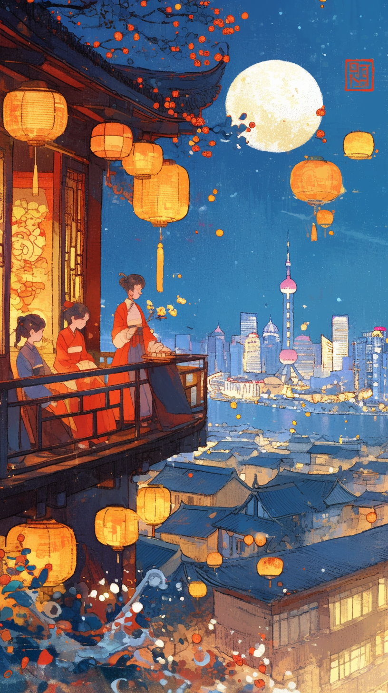

概述
本工作流展示了如何利用 AI 工具创作富有创意和个性化的节日祝福内容。无论是传统节日还是现代节日，AI 都能帮助我们生成既应景又独特的祝福语、图片和视频内容，让节日社交更加轻松有趣。
通过 AI 工具，我们可以快速生成多样化的节日内容，包括文字祝福、节日图片、视频创意等，让节日社交更加高效和有趣。
创作流程展示
1. 节日祝福文案创作
案例一：家庭温情传递
场景描述
春节/中秋/重阳等家庭团聚型节日
Prompt 模板
请生成一段[节日名称]家庭祝福文案，对象为[长辈/同辈/孩子]，需包含以下元素：
- 传统节日意象（如春节用"灯笼/饺子"，中秋用"明月/团圆"）
- 结合过去一年的家庭共同记忆（如装修新房/孙辈升学）
- 未来期许（健康/事业/学业方向）
- 口语化表达（避免成语堆砌）
- 可选项：方言特色（如粤语/闽南话语气词）
- 示例风格参考："妈，今年咱家厨房终于装上洗碗机啦！愿新年油渍不沾手，欢乐常相伴~"
DeepSeek 案例
案例输入
请生成一段中秋节家庭祝福文案，对象为姐姐，需包含以下元素：
1. 传统节日意象（如月亮/月饼/赏月）
2. 结合过去一年的家庭共同记忆（一起照顾生病母亲）
3. 未来期许（工作与家庭平衡）
4. 口语化表达（避免成语堆砌）
5. 加入上海话词汇（如"格/侬/辰光/浪厢"）案例输出
"阿姐，今年中秋格月亮特别亮，就像侬夜里陪妈妈挂盐水辰光个眼神。月饼买好了豆沙同鲜肉，明朝一道蹲阳台浪厢看月亮好伐？愿侬新个一年，办公室报表同屋里厢事体统统摆摆平~"
案例二：职场关系维护
场景描述
适用节日：元旦/端午/圣诞等通用节日
Prompt 模板
请创建专业得体的[节日名称]祝福语，用于：
- 接收人身份：[直属领导/跨部门同事/长期客户]
- 行业特性：[互联网/制造业/金融等]
- 需包含：
- - 行业相关隐喻（如IT行业用"系统升级"，制造业用"精工细作"）
- - 量化成果致谢（"感谢Q3的项目支持"等具体事件）
- - 适度文化适配（外企可加英文祝福，国企注重传统格式）
- - 结尾留开放钩子（如"期待新年继续携手..."）
- 禁忌：表情符号/私人生活话题
DeepSeek 案例
案例输入
请创建专业得体的端午节祝福语，用于：
接收人身份：长期客户（年度合作5次以上）
行业特性：建筑设计
需包含：
- 行业相关隐喻（如"BIM技术攻坚"类比"龙舟竞渡"）
- 量化成果致谢（"完成会展中心3D建模攻坚"）
- 国企风格文化适配（采用传统书信格式与文言词汇）
- 结尾留开放钩子（如"共绘城市蓝图"）
禁忌：表情符号/私人生活话题
案例输出
"致XX设计院同仁：
值此端午佳节，谨祝诸事顺遂。贵司在会展中心项目中的BIM技术攻坚，犹如龙舟竞渡之劲旅，破浪前行尽显锋芒。愿未来继续携手，以匠心为楫，共绘城市蓝图。此致敬礼！"
案例三：Z世代社交互动
场景描述
情人节/光棍节/跨年等青年文化节日
Prompt 模板
生成符合[节日名称]网络社交场景的祝福/自嘲文案，要求：
- 目标平台：[微信朋友圈/微博/INS等]
- 核心情绪：[单身自嘲/情侣放闪/社畜共鸣]
- 必备要素：
- - 流行梗植入（如"电子木鱼功德+1"）
- - 平台特色格式（朋友圈用九宫格文案位提示）
- - 多模态适配（建议emoji插入位置）
- - 二次元/游戏圈层黑话（可选）
DeepSeek 案例
案例输入
生成情人节朋友圈自嘲文案
变量填充：
[目标平台]=微信朋友圈（配图需文字提示）
[核心情绪]=单身自嘲+职场共鸣
[流行梗]="寡王/狼人杀/摸鱼"
[二次元要素]=加入《咒术回战》梗
案例输出
【情人节生存状态】
寡王本王·特级摸鱼术师
今日成就：
✓ 在狼人杀局被首刀3次（比被追的记录+1）
✓ 收到甲方『爱的暴击』×N
✓ 自动屏蔽全城玫瑰花攻击
文案位提示：[配九宫格建议：1/5/9放加班照，中间放奶茶续命图]
领域展开·无效相亲全回避 # ᕙ(⇀‸↼‶)ᕗ
2. 节日图片创作

3. 视频创意建议
视频创意 Prompt：
请为春节祝福视频提供创意建议，包括：
- 视频主题和风格
- 拍摄场景和道具建议
- 音乐和转场效果
- 文案和字幕设计
AI 生成的视频创意建议：
一、视频主题
- 「龙年第一天」主题：展现新年第一天的美好时刻
- 「团圆时刻」主题：记录家人团聚的温馨画面
- 「新年愿望」主题：展示对新年的期待和祝福
二、拍摄建议
- 场景：家中布置、户外活动、节日装饰等
- 道具：红灯笼、春联、福字、红包等传统元素
- 服装：红色或喜庆颜色的服装，突出节日氛围
三、后期制作
- 音乐：选择喜庆、温馨的新年音乐
- 转场：使用流畅、喜庆的转场效果
- 字幕：添加祝福语和节日元素
推荐工具
核心工具
- 文案创作：ChatGPT / Claude / DeepSeek
- 图片生成：Midjourney / DALL-E 3
- 视频制作：剪映 / CapCut